CRM: основы, контакты и сделки в Битрикс24
Этот модуль учит вести клиентскую работу в CRM так, чтобы компания не теряла историю общения, договоренности, следующий шаг и реальную картину по сделкам. Главная задача — убрать дубли, неполные карточки и «мертвые» сделки.
Что важно понять в M8
CRM — это не телефонная книга и не формальный список клиентов. Это рабочая система клиентского контекста, которая хранит, с кем мы общаемся, какую организацию он представляет, по какой возможности идет работа и что должно произойти дальше.
Результат прохождения
сотрудник умеет корректно создавать и обновлять CRM-карточки, фиксировать историю и следующий шаг
Что стоит запомнить
Качественная CRM = нет дублей + понятные карточки + актуальные стадии + зафиксированные коммуникации + следующий шаг.
Паспорт модуля
Место в курсе
после модулей по задачам, проектам, документам и отчетности
Входной уровень
пользователь умеет фиксировать договоренности и работать с задачами и документами
Целевая аудитория
коммерческий блок, РП, ПТО, инженеры, координаторы, сотрудники, работающие с заказчиками и подрядчиками
Итоговый результат
сотрудник умеет корректно создавать и обновлять CRM-карточки, фиксировать историю и следующий шаг
сотрудник умеет корректно создавать и обновлять CRM-карточки, фиксировать историю и следующий шаг
1. CRM как система клиентского контекста
CRM в Битрикс24 хранит не только имя клиента и номер телефона. Она собирает историю коммуникаций, документы, сделки, договоренности, следующий шаг и делает клиентскую работу передаваемой между сотрудниками. Это особенно важно, когда в процессе участвуют коммерческий блок, РП, ПТО и руководители.
История
В CRM видно, кто, когда и о чем говорил с клиентом.
Передача
Клиента можно передать другому сотруднику без потери контекста.
Управление
Руководитель видит реальную воронку, а не устные обещания.
Контроль
Снижается риск забытых звонков, потерянных писем и незафиксированных договоренностей.
Если звонок, письмо или договоренность не отражены в CRM, компания становится зависимой от памяти конкретного сотрудника. В этом случае новый менеджер, руководитель или координатор не может быстро понять, что уже обещано клиенту и что делать дальше.
После любой значимой коммуникации с клиентом в CRM должен остаться след: комментарий, письмо, звонок, встреча, обновленная стадия или следующий шаг.
2. CRM-сущности: кто есть кто
В простом режиме CRM работа ведется без лидов; в классическом есть отдельная квалификация лидов, если она доступна на тарифе. Для практики выясните принятый режим и выполните маршрут в нем. Не переключайте рабочую CRM ради упражнения: при переходе из классического режима в простой незакрытые лиды автоматически конвертируются. Режимы CRM и последствия переключения.
Базовый уровень M8 строится на пяти сущностях: лид, контакт, компания, сделка и дело или активность. Пользователь должен не просто выучить определения, а понимать, какую роль каждая сущность играет в рабочем процессе.
Лид
Входящий интерес, который еще нужно разобрать и квалифицировать.
Контакт
Конкретный человек, с которым идет общение.
Компания
Организация, которую представляет контакт.
Сделка
Конкретная возможность, предмет работы или коммерческий процесс.
Дело / активность
Следующий звонок, письмо, встреча или иное действие по CRM.
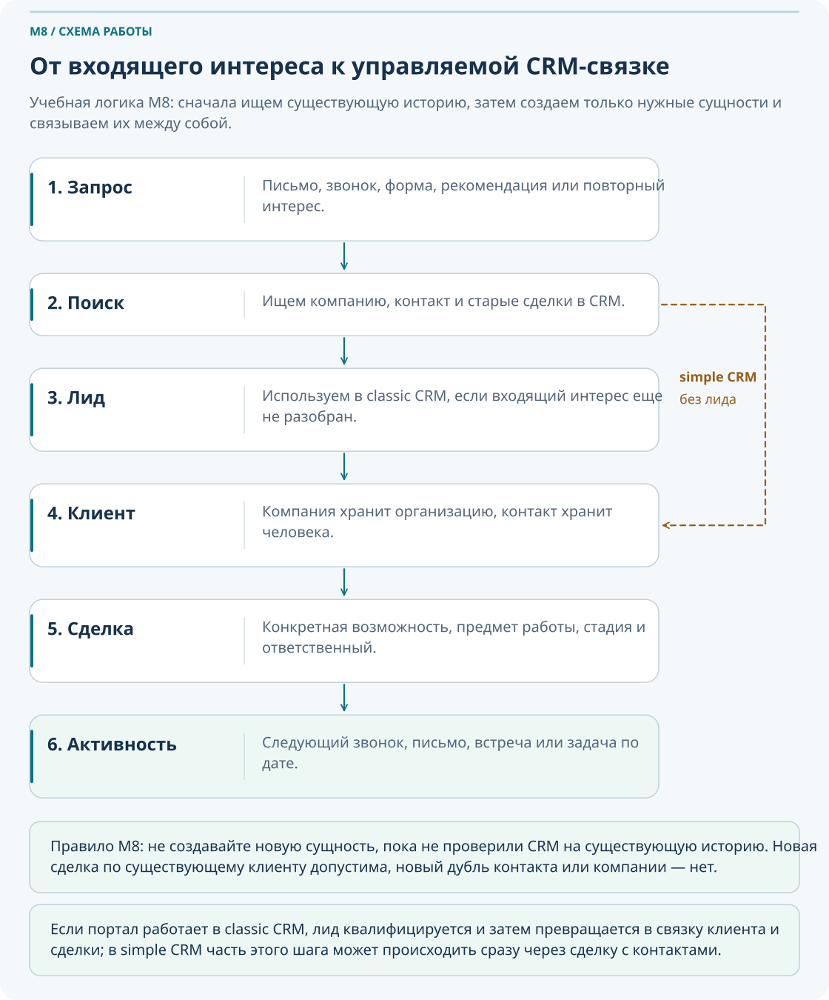
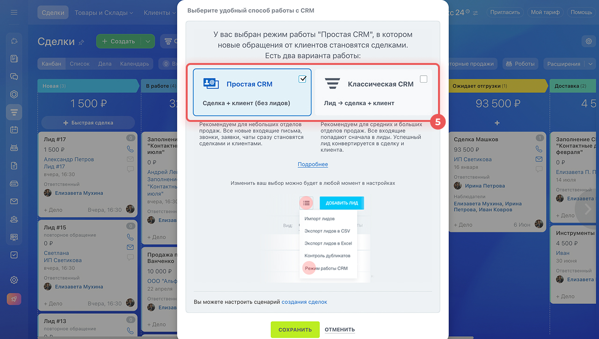
Именно через поле «Клиент» в сделке обычно связываются контакты и компания. Сделка может включать несколько контактов, но только одну компанию. Поэтому важно не просто создать сущности, а правильно связать их между собой.
3. Контакты и компании
Качественная CRM начинается с дисциплины карточек. Сотрудник должен понимать, какие поля обязательны, что проверять перед созданием и как обновлять существующие записи, если клиент уже есть в базе.
| Сущность | Рекомендуемый рабочий минимум | Что повышает ценность карточки |
|---|---|---|
| Контакт | ФИО, телефон или email, компания, ответственный | Должность, роль, комментарий, объект, связанная сделка |
| Компания | Название, тип, ответственный | ИНН, регион, сегмент, история работы, примечания |
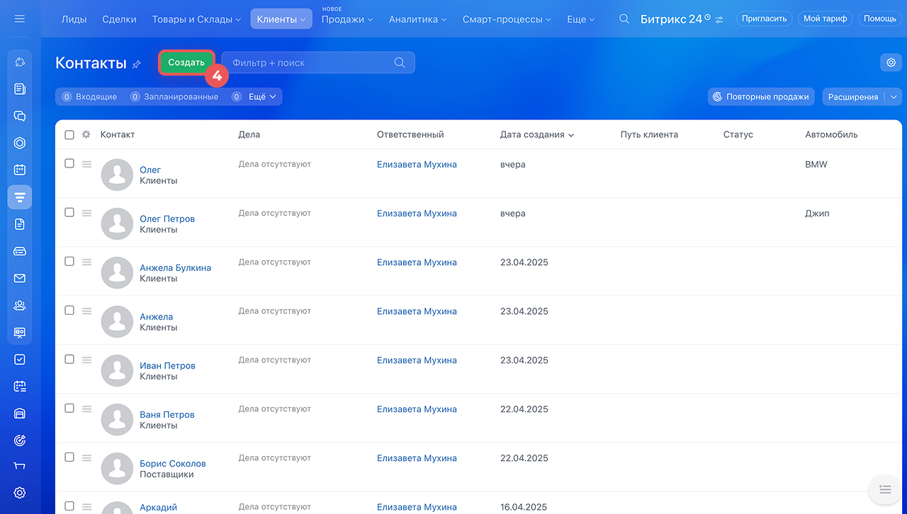
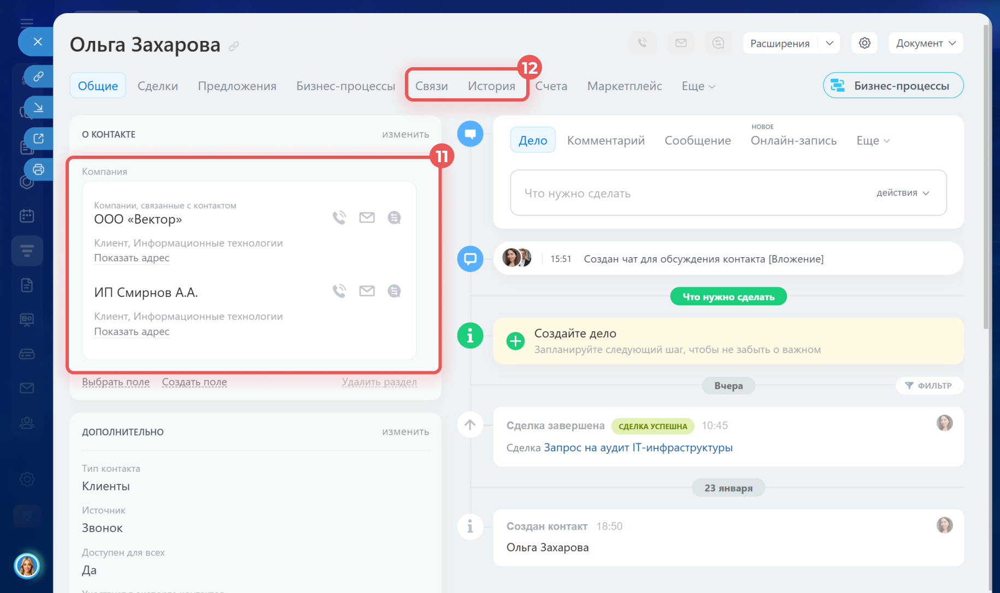
Плохая карточка
- Имя: Сергей
- Телефон: есть
- Комментарий: звонил
- Нет компании, роли и следующего шага
Хорошая карточка
- ФИО, должность, телефон, email
- Связана с компанией
- Понятна роль контакта в процессе
- Есть комментарий, объект и связанная сделка
Перед созданием новой карточки всегда проверьте ФИО, телефон, email, название компании и историю похожих записей. В большинстве случаев дубль появляется не из-за системы, а из-за спешки пользователя.
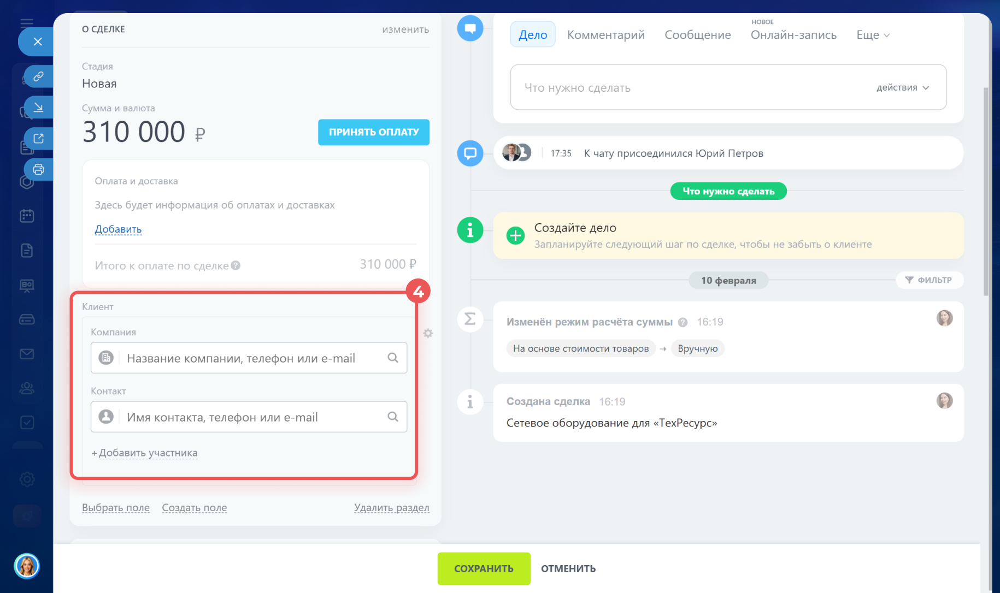
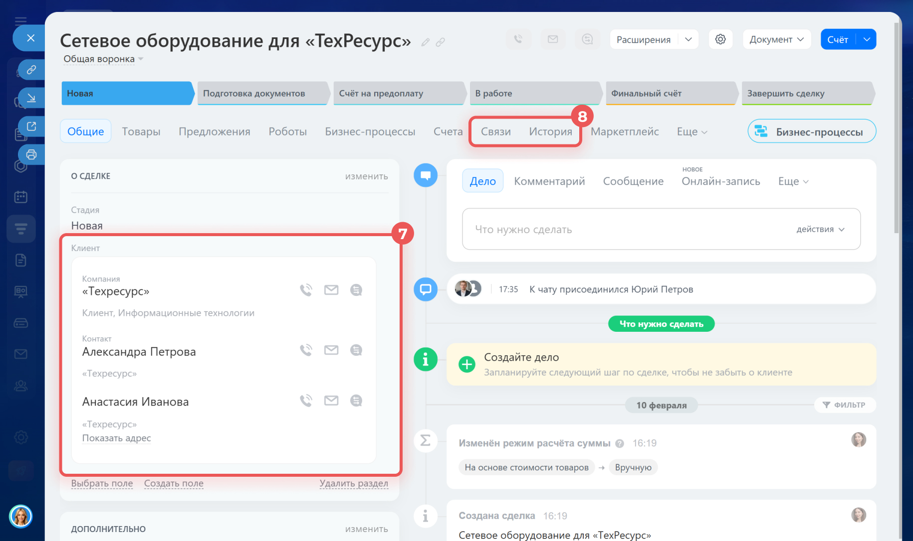
Для пяти учебных кейсов определите, нужно ли создавать новую компанию, новый контакт или достаточно обновить существующую карточку.
Переделайте неполную карточку контакта в рабочую: добавьте обязательные поля, компанию, комментарий и связь со сделкой.
Смоделируйте ситуацию, когда контакт сменил должность или компанию, и опишите, как правильно обновить базу.
4. Сделки: стадия, следующий шаг и результат
Сделка в M8 — это не просто запись о потенциальной продаже. Это управляемая единица клиентской работы, в которой должно быть понятно, что происходит сейчас, что уже сделано и какое следующее действие должно произойти.
Новый запрос
Квалификация
Подготовка предложения
Согласование
Договорной этап
Успех / отказ
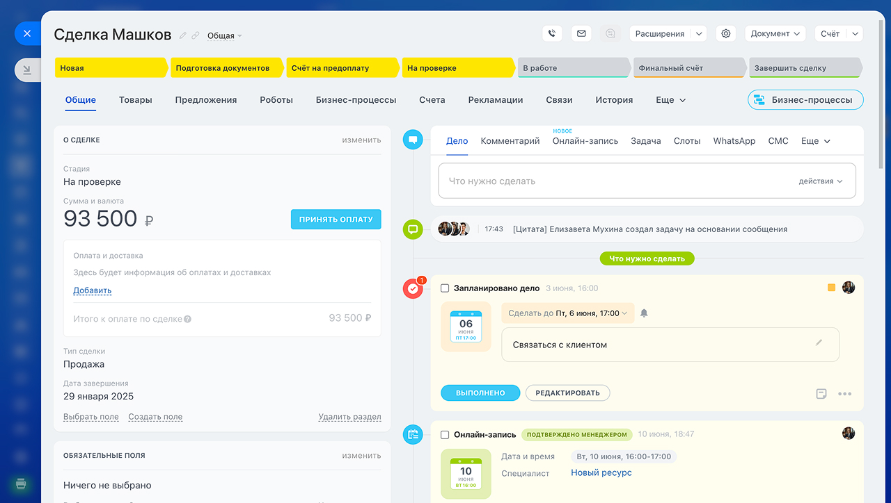
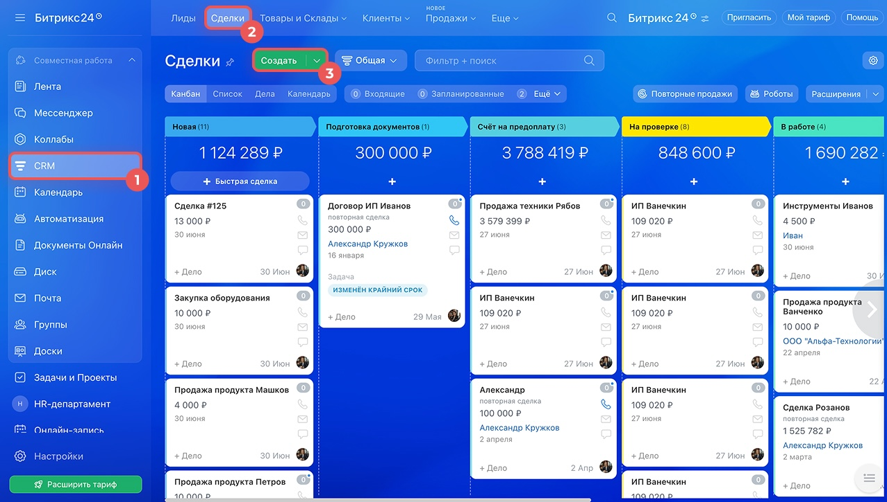
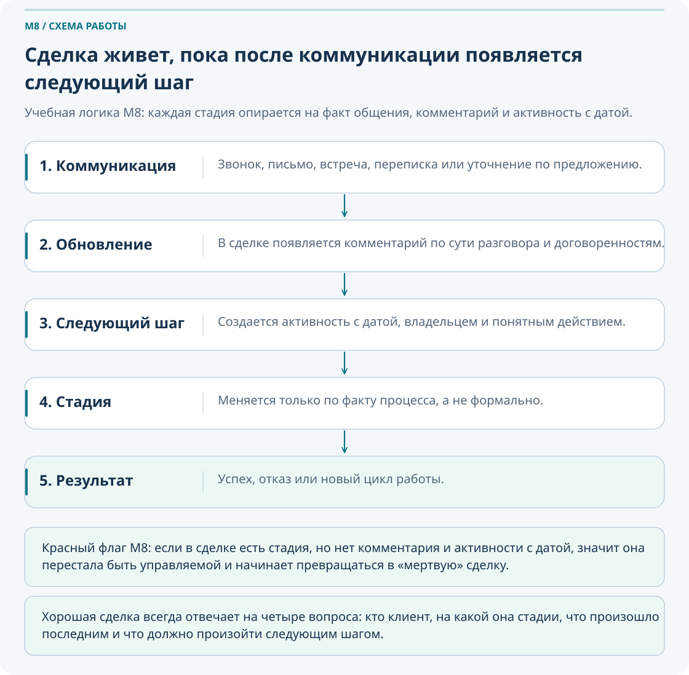
| Что должно быть в сделке | Зачем это нужно | Типичная ошибка |
|---|---|---|
| Понятное название | Чтобы руководитель и коллега понимали предмет сделки без открытия карточки | Одинаковые или абстрактные названия вроде «Сделка 1» |
| Клиент, стадия и ответственный | Чтобы была понятна принадлежность и текущее состояние | Сделка без связи с компанией или контактами |
| Комментарий после коммуникации | Чтобы не терять историю и договоренности | «Созвонились» без сути разговора |
| Следующий шаг с датой | Чтобы сделка не зависала без движения | Есть стадия, но нет следующего действия |
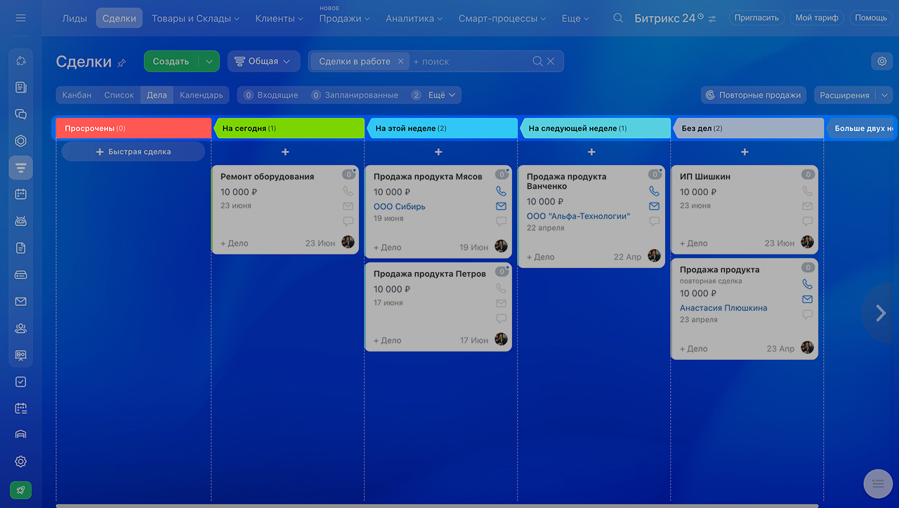
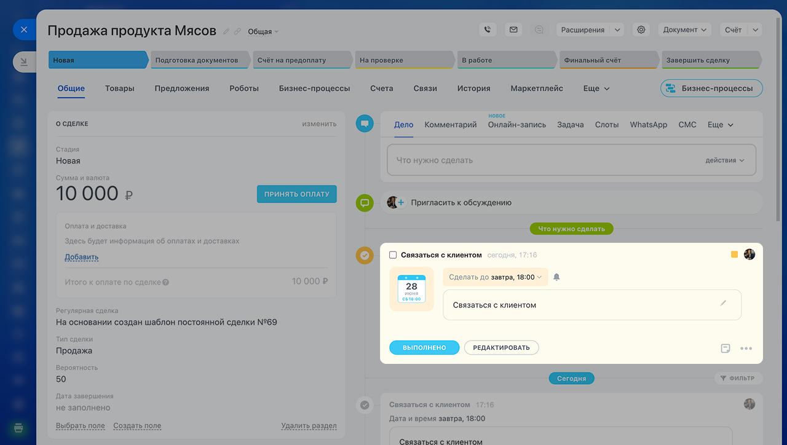
Если после разговора с клиентом в сделке не появился новый комментарий, активность или следующий шаг, значит CRM не отражает реальную работу и сделка начинает умирать.
5. Дубли и качество базы
Перед объединением. Совпадение телефона или названия является поводом проверить карточки, а не достаточным доказательством дубля. Сравните историю, реквизиты, контакты и связанные сделки; затем выберите основную запись и разрешите конфликты полей. В учебной практике объединяйте только тестовые записи. Доступность автоматического объединения и права на операцию проверяются отдельно. Официальный порядок объединения.
Дубли и неполные карточки разрушают CRM так же быстро, как «мертвые» сделки. Из-за них история общения распадается на несколько записей, аналитика искажается, а новый сотрудник не понимает, какая карточка является основной.
Откуда берутся дубли
Спешка, отсутствие поиска, разное написание имен и компаний, повторные обращения.
Что искажается
История, количество клиентов, картина по воронке и отчетность по сотрудникам.
Как предотвращать
Искать по телефону, email, ФИО, названию компании и проверять историю.
Что делать с уже созданным дублем
Выбрать основную запись и объединить данные вручную или через механизм объединения дублей.
Если найден дубль, не создавайте третью карточку «на всякий случай». Сначала определите основную запись, затем объедините поля и сохраните в базе только рабочий вариант.
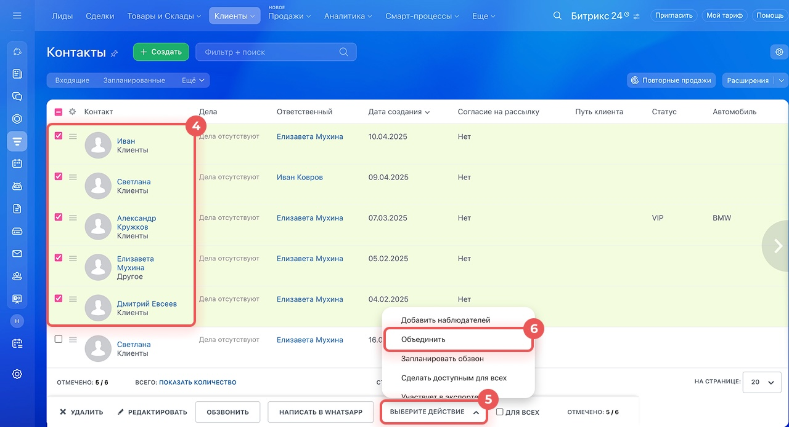
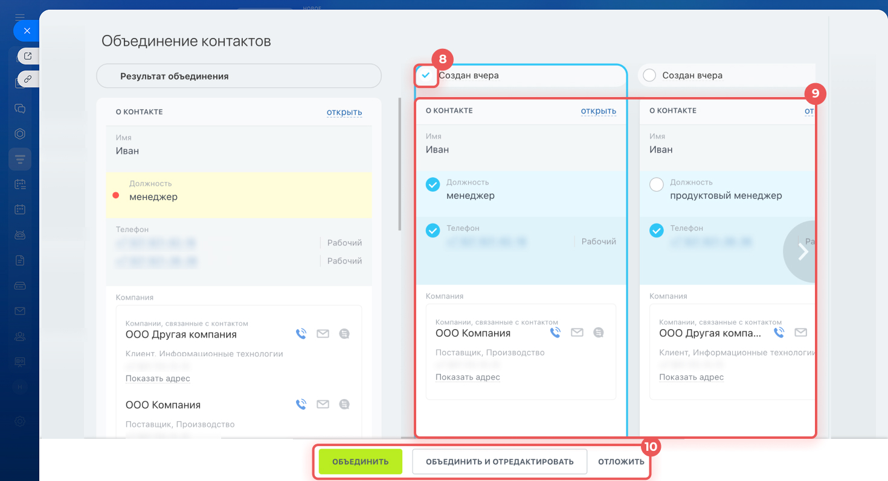
Практика «Создать или найти?»
- В CRM уже есть компания «ЭнергоСеть», но новый человек пишет с корпоративного email.
- Есть контакт Иванов И.И., но новый звонок пришел с другого номера.
- Клиент обратился повторно по новому объекту.
- Есть компания с похожим названием, но в другом регионе.
Задание: для каждого кейса решите, что делать: обновить, связать, создать новую сделку или объединить дубликаты.
6. Сценарии работы
Ниже собраны типовые рабочие ситуации, которые помогают закрепить CRM не как набор терминов, а как повседневный инструмент коммерческой и проектной работы.
Сценарий 1. Новый заказчик
Пришел новый запрос. Нужно проверить базу, создать компанию и контакт, открыть сделку, зафиксировать вводные и назначить следующий шаг.
Сценарий 2. Действующий клиент, новый объем
Компания и контакт уже есть. Новую карточку клиента создавать не нужно, но по новому предмету работы должна появиться отдельная сделка.
Сценарий 3. Сделка без движения
Сделка 10 дней стоит на стадии «Согласование», последний комментарий «Отправили ТКП», следующего шага нет.
Сценарий 4. Проигранная сделка
Сделка завершилась отказом. Нужно зафиксировать причину, комментарий и, если нужно, напоминание о возвращении позже.
Практика «Плохая карточка → хорошая карточка»
Практика «Сделка без движения»
- Проверьте историю коммуникаций.
- Определите фактическую стадию сделки.
- Добавьте комментарий по текущему статусу.
- Создайте следующий шаг.
- Назначьте срок активности.
- Сформулируйте короткий статус для руководителя.
Практика «Причина проигрыша»
Если сделка проиграна, нужно зафиксировать причину: цена, сроки, проиграли конкуренту, не наш профиль, клиент перенес проект, нет бюджета, нет ответа или другое. Затем коротко написать, что произошло, что можно улучшить и нужен ли возврат к клиенту позже.
7. Сквозная практика: «От входящего запроса до управляемой сделки»
Этот маршрут объединяет весь M8 в одну рабочую логику и показывает, как из отдельного обращения сформировать прозрачный CRM-процесс.
Получаем запрос
Фиксируем, кто обратился, по какому объекту или предмету и что нужно клиенту.
Проверяем базу
Ищем компанию, контакт и старые сделки, чтобы не плодить дубли.
Создаем или обновляем
При необходимости создаем компанию и контакт либо обновляем существующие записи.
Открываем сделку
Задаем понятное название, предмет, стадию, ответственного и ожидаемый результат.
Фиксируем следующий шаг
После звонка или письма создаем активность с датой и комментарием.
Обновляем стадию
Перемещаем сделку только по фактическому состоянию, а не формально.
Завершаем результат
При успехе или отказе фиксируем итог, причину и дальнейшие договоренности.
Проверяем качество
Смотрим, нет ли дублей, пустых полей и сделок без движения.
8. Что делать, если…
Если не знаете, создавать контакт или компанию
Контакт — это человек, компания — это организация. Если у вас есть конкретный человек от организации, обычно нужны обе карточки и связь между ними.
Если похожий контакт уже есть
Не создавайте новый сразу. Проверьте телефон, email, компанию и историю. После этого решите: обновить карточку или объединить дубли.
Если клиент обратился повторно
Найдите существующую компанию и контакт. Если это новый предмет работы, создайте новую сделку, а не новый контакт или новую компанию.
Если сделка давно без движения
Проверьте историю, обновите стадию, добавьте комментарий и создайте следующий шаг с датой.
Если сделка проиграна
Закройте ее как неуспешную, укажите причину отказа и, если нужно, оставьте пометку о возможном возвращении к клиенту позже.
Если контакт сменил должность или компанию
Обновите карточку, добавьте комментарий об изменении и при необходимости свяжите контакт с новой компанией.
Если руководитель не понимает статус сделки
Проверьте название, стадию, комментарии, следующий шаг и срок. Если по этим полям непонятно, что происходит, сделка ведется слабо.
Если сделок слишком много и они не различимы
Введите правило наименования: объект + предмет + клиент или тип работ. Это сразу повышает управляемость воронки.
9. Типичные ошибки в CRM
Создавать новый контакт без поиска по базе.
Хранить карточку клиента в формате «Имя + телефон» без контекста и связи со сделкой.
Оставлять сделку в старой стадии, хотя фактически работа уже ушла дальше или остановилась.
Не фиксировать следующий шаг после звонка или письма.
Держать проигранные сделки активными, искажая воронку и отчетность.
Использовать одинаковые названия сделок, из-за чего руководитель не понимает, о чем идет речь.
10. Самопроверка
Эти вопросы проверяют, понимаете ли вы рабочую логику CRM, а не только названия сущностей.
Вопросы
- Чем контакт отличается от компании?
- Что нужно сделать перед созданием нового контакта?
- Что такое сделка?
- Что обязательно должно быть в сделке?
- Зачем сделке нужен следующий шаг?
- Почему нельзя держать проигранную сделку активной?
- Что делать, если найден дубль контакта?
- Почему одинаковые названия сделок мешают работе?
- Что нужно фиксировать после звонка с клиентом?
- Когда по существующему клиенту нужно создавать новую сделку?
Проверить свои ответы
- Контакт — это человек, компания — организация, которую он представляет.
- Сначала выполнить поиск по базе по телефону, email, ФИО и компании.
- Сделка — это конкретная возможность или процесс работы с клиентом по определенному предмету.
- Понятное название, клиент, стадия, ответственный и следующий шаг.
- Чтобы сделка не зависала без движения и была понятна следующая точка контакта.
- Это искажает воронку, аналитику и управленческую картину.
- Определить основную запись, проверить поля и объединить дубликаты или обновить существующую карточку.
- Потому что по ним нельзя быстро понять предмет сделки и ее статус.
- Комментарий по сути разговора, договоренности, изменение стадии и следующую активность.
- Когда клиент тот же, но предмет работы, объект или возможность новые.
11. Итоговое практическое задание
Сценарий: поступил запрос от АО «ЭнергоСеть» на монтаж оборудования ПС 110 кВ. Нужно оформить клиентскую работу в CRM так, чтобы другой сотрудник мог продолжить процесс без потери контекста.
- Проверьте, есть ли компания в CRM.
- Если компании нет, создайте карточку.
- Проверьте, есть ли контактное лицо.
- Если контакта нет, создайте карточку.
- Заполните ФИО, должность, телефон, email, роль и комментарий.
- Свяжите контакт с компанией.
- Создайте сделку с понятным названием.
- Укажите предмет сделки, стадию, ответственного и ожидаемый результат.
- Зафиксируйте вводные по объекту.
- Создайте следующий шаг с датой.
- Добавьте комментарий после условного звонка.
- Переведите сделку на следующую стадию при наличии основания.
- Если сделка проиграна, закройте ее с причиной.
- Проверьте чек-лист качества CRM.
Критерии успешного прохождения
- Сотрудник понимает назначение CRM и различает лид, контакт, компанию, сделку и активность.
- Сотрудник умеет искать существующую карточку перед созданием новой.
- Сотрудник умеет создать контакт с обязательным минимумом данных.
- Сотрудник умеет связать контакт с компанией и сделкой.
- Сотрудник умеет выбрать стадию по фактическому состоянию.
- Сотрудник умеет зафиксировать следующий шаг и обновить историю после коммуникации.
- Сотрудник понимает, как дубли и «мертвые» сделки искажают CRM.
- Сотрудник умеет закрыть сделку с причиной результата.
12. Что дальше в курсе
13. Полезные материалы
- Как начать работать с CRM
- Как выбрать режим работы CRM
- Контакты: что это и как с ними работать
- Карточка CRM: возможности и настройки
- Как связать компании, контакты и сделки
- Сделки: что это и как с ними работать
- Представление «Дела» в CRM
- Умные дела: создание напоминаний
- Как объединить дубликаты в CRM
- Автоматическое объединение дубликатов